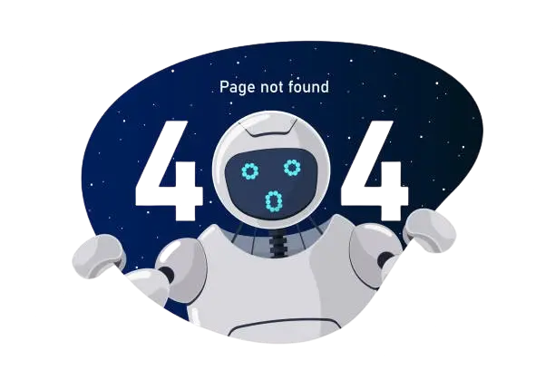

Sayfa burada değilmiş
Aradığın sayfa ya hiç var olmadı, ya taşındı ya da şu an bir yerlerde kahvesini yudumlayıp seni bulmanı bekliyor. Belki zikir yapıyordur da, belli olmaz. Endişelenme — kontrol hala bizde. (En azından öyle umuyoruz.)
Önemli olan sen buradasın ve aşağıdaki butonlar çalışıyor. Ona söz veriyoruz.